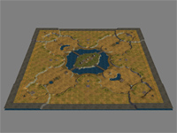
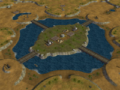
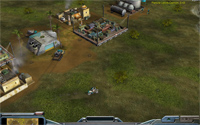
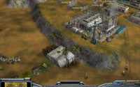
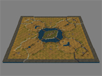
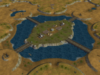
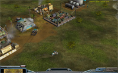
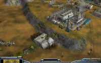

   
    Download this map for Generals Zero Hour
This map is a modified version of the map No Surrender.
The modifications include:
- Two additional bridges making it easier to access the central island as well as harder to defend it.
- Two additional pairs of bunkers added on the island side of the new bridges.
- Reinforcement pad removed from island. Instead there is now one pad in each base area.
- Added another GLA stash to the island and changed both stashs to stealth type.
- Added a chemical bunker for strategic purposes in the very middle of the island.
- Added one large supply dock on the island and two docks inbetween bases.
- Added supply piles in base areas.
A highly symmetrical 400x400 4-player map with a treasured island in the center.
This modified map holds a lot more supplies compared to No Surrender. You start out with one supply dock. Additional supply piles nearby. A couple of oil derricks near the water, and one oil derrick in each corner of the map. Supply docks for expansion reside inbetween bases, on the central island, and in all corners of the map. The central island holds two oil refineries and two GLA Stealth General supply stashs!
As usual, the map has been tested with all available armies, making for a good match! Attack paths lead into each base from four different directions. Gameplay may slow down if units get stuck, although this rarely happens.
Optimized for Advanced AI Mod for C&C Generals: Zero Hour v0.98